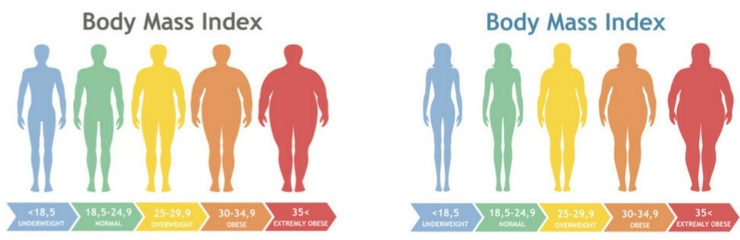

| Cálculo IMC | Escala | Resultado |
|---|---|---|
| 18.5 | 18.5 - 24.9 | Normal, por lo que debererías seguir un plan encaminado a obtener un peso apto para ti y una correcta nutrición. |
| Plan Alimentación | Plan Ejercicios |
|---|---|
| Para empezar, con papel y lápiz en mano, haga una lista de sus comidas favoritas. Puede ser útil hablar con la familia u hojear su recetario favorito. Algunas de las comidas serán más saludables que otras, pero por ahora, solo anótelas en la lista. | Los estudios indican que la gente se siente llena por la cantidad de comida que come, no por las calorías que consume. Usted puede rebajar las calorías de sus comidas favoritas recortando la cantidad de grasas o aumentando el contenido de ingredientes ricos en fibra, como frutas o verduras. |
C3-G15-Desarrollo de Software, Misión Tic 2022- UNAB - Grupo7 Visita MisionTIC.